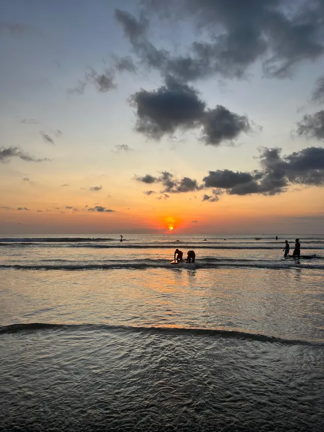

Travel storytelling
Personal stories and short films that show the experience around a place, from the street food to the quiet moments between locations.
Travel stories and creator content grounded in real experiences.
With a degree in International Business and experience as an assistant manager, I bring curiosity, practical thinking and a personal voice to travel content.
Explore real work from Thailand, Bali and the Philippines below. The work below shows the style and formats I create.
See the travel stories →
Every collaboration starts with the location and the story, then finds the format that suits the audience.
Personal stories and short films that show the experience around a place, from the street food to the quiet moments between locations.
Vertical videos and photo-led posts for Instagram, TikTok and YouTube Shorts that feel native to the journey.
Thoughtful creator content for travel, outdoors, gear and lifestyle projects—captured in a way that keeps the real setting intact.
I am building DainyelOnTheMove for people who value the experience as much as the final image.
We agree on the purpose, audience, deliverables and why the collaboration belongs on the channel.
The result should give viewers a real sense of the place, product or experience instead of a generic advertisement.
We keep communication simple and agree on approvals, usage and timing before publishing anything.
The best way to understand the style is to see the stories and films already on the site. They combine personal perspective, local detail, movement and the occasional unplanned moment.
Explore the travel stories →
A personal long read about a three-month study exchange. Read the story →

Photographs and an honest perspective on living and studying on the island. Explore the story →

A short film from the road. The full written story is still in progress. Watch the film →
This profile contains my current offer and work examples. For a project brief or usage details, contact me on Instagram.
Tell me what you are planning. This form prepares a message on your device; copy it, then send it to me on Instagram.
Prefer email? support@dainyelonthemove.com ↗. You can also contact me on Instagram. The form below prepares a message for you to copy; it does not send it.
Your message is not sent or stored by this website.